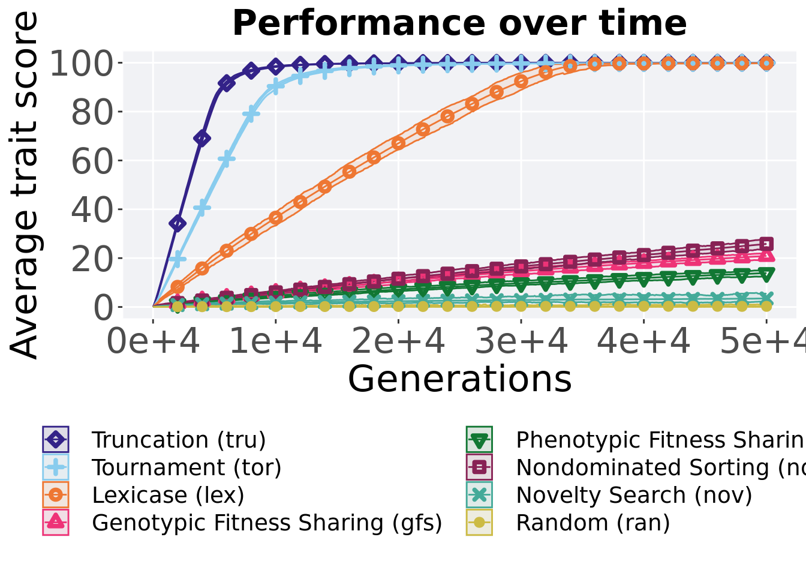
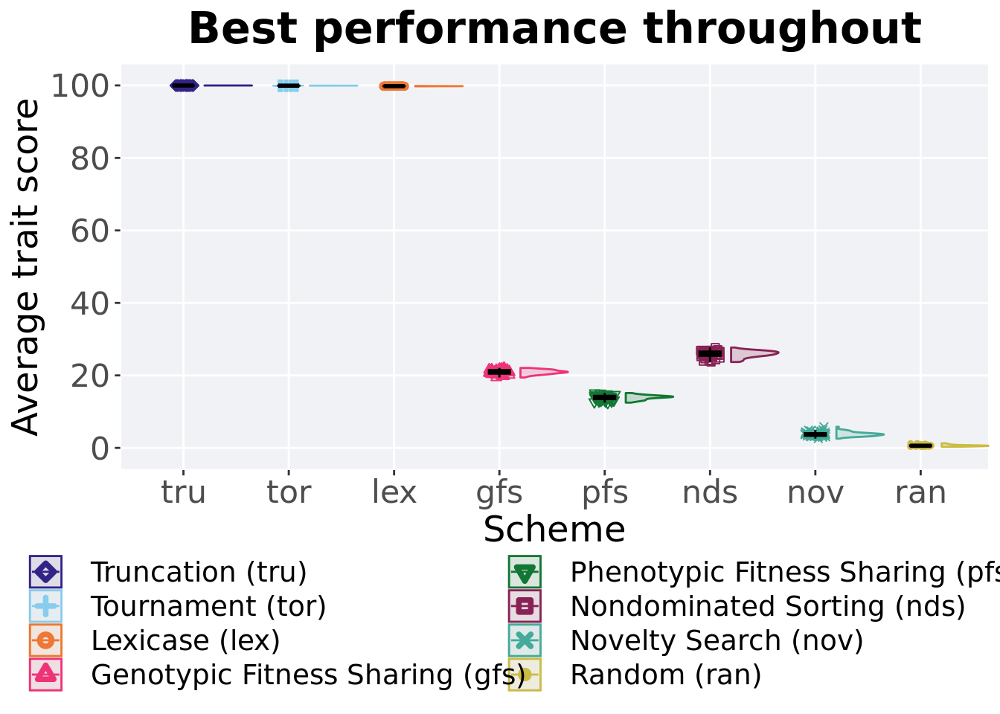
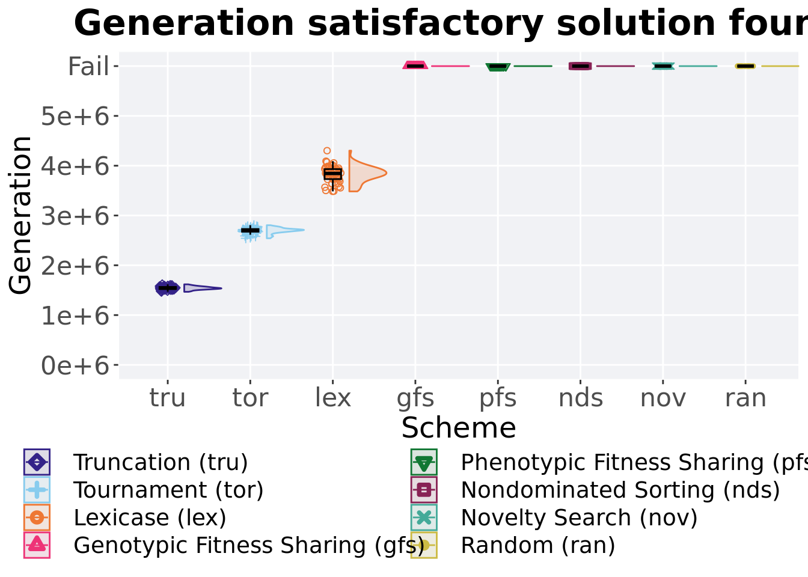
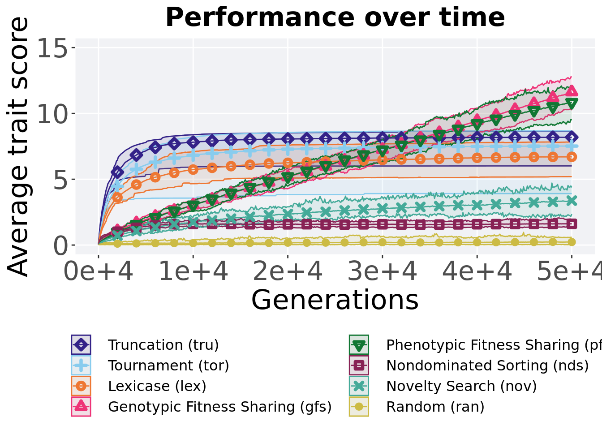
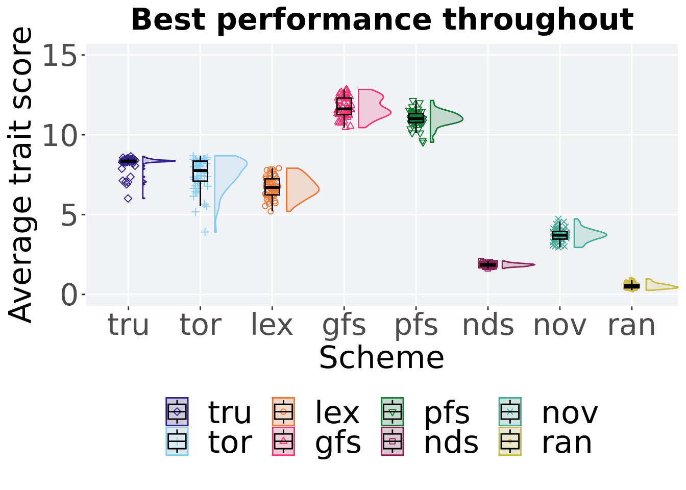
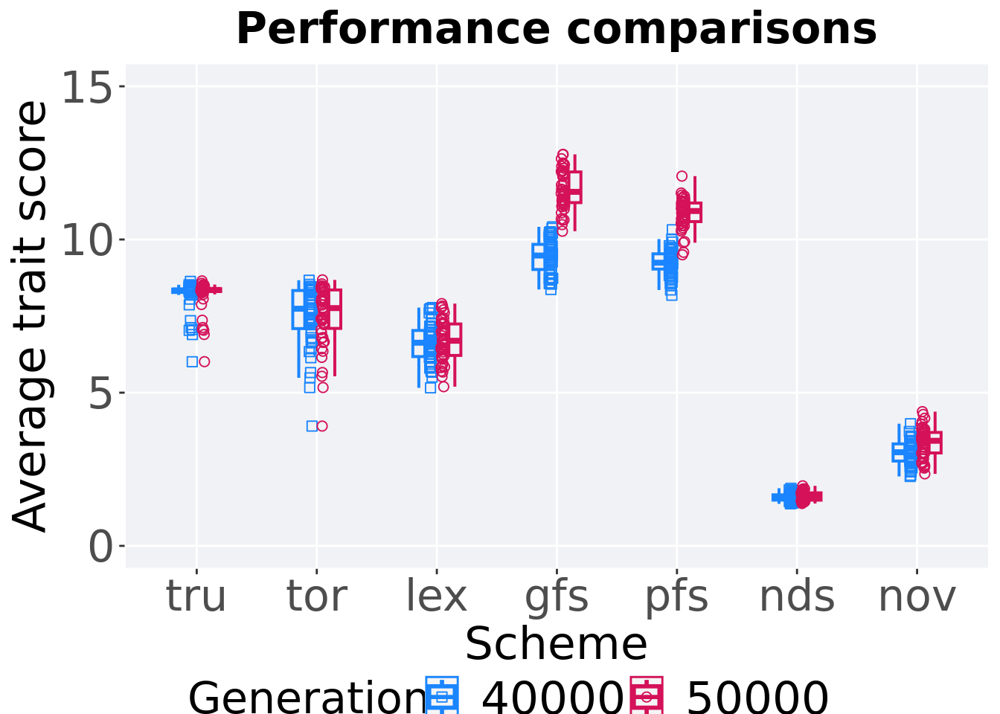

Chapter 3 Ordered exploitation results
Here we present the results for best performances found by each selection scheme replicate on the ordered exploitation diagnostic. Best performance found refers to the largest average trait score found in a given population. Note that performance values fall between 0.0 and 100.0.
3.2 Performance over time
Best performance in a population over time.
# data for lines and shading on plots
lines = filter(cc_over_time, diagnostic == 'ordered_exploitation') %>%
group_by(`Selection\nScheme`, gen) %>%
dplyr::summarise(
min = min(pop_fit_max) / DIMENSIONALITY,
mean = mean(pop_fit_max) / DIMENSIONALITY,
max = max(pop_fit_max) / DIMENSIONALITY
)## `summarise()` has grouped output by 'Selection Scheme'. You can override using
## the `.groups` argument.ggplot(lines, aes(x=gen, y=mean, group = `Selection\nScheme`, fill =`Selection\nScheme`, color = `Selection\nScheme`, shape = `Selection\nScheme`)) +
geom_ribbon(aes(ymin = min, ymax = max), alpha = 0.1) +
geom_line(size = 0.5) +
geom_point(data = filter(lines, gen %% 2000 == 0 & gen != 0), size = 1.5, stroke = 2.0, alpha = 1.0) +
scale_y_continuous(
name="Average trait score",
limits=c(0, 100),
breaks=seq(0,100, 20),
labels=c("0", "20", "40", "60", "80", "100")
) +
scale_x_continuous(
name="Generations",
limits=c(0, 50000),
breaks=c(0, 10000, 20000, 30000, 40000, 50000),
labels=c("0e+4", "1e+4", "2e+4", "3e+4", "4e+4", "5e+4")
) +
scale_shape_manual(values=SHAPE)+
scale_colour_manual(values = cb_palette) +
scale_fill_manual(values = cb_palette) +
ggtitle('Performance over time')+
p_theme + theme(legend.title=element_blank(),legend.text=element_text(size=11)) +
guides(
shape=guide_legend(ncol=2, title.position = "bottom"),
color=guide_legend(ncol=2, title.position = "bottom"),
fill=guide_legend(ncol=2, title.position = "bottom")
)
3.3 Best performance throughout
Best performance found throughout 50,000 generations.
### best performance throughout
filter(cc_best, col == 'pop_fit_max' & diagnostic == 'ordered_exploitation') %>%
ggplot(., aes(x = acron, y = val / DIMENSIONALITY, color = acron, fill = acron, shape = acron)) +
geom_flat_violin(position = position_nudge(x = .2, y = 0), scale = 'width', alpha = 0.2) +
geom_point(position = position_jitter(width = .1), size = 1.5, alpha = 1.0) +
geom_boxplot(color = 'black', width = .2, outlier.shape = NA, alpha = 0.0) +
scale_y_continuous(
name="Average trait score",
limits=c(-1, 101),
breaks=seq(0,100, 20),
labels=c("0", "20", "40", "60", "80", "100")
) +
scale_x_discrete(
name="Scheme"
)+
scale_shape_manual(values=SHAPE)+
scale_colour_manual(values = cb_palette, ) +
scale_fill_manual(values = cb_palette) +
ggtitle('Best performance throughout')+
p_theme + theme(legend.title=element_blank()) +
guides(
shape=guide_legend(nrow=2, title.position = "bottom"),
color=guide_legend(nrow=2, title.position = "bottom"),
fill=guide_legend(nrow=2, title.position = "bottom")
)
3.3.1 Stats
Summary statistics for the performance of the best performance throughout 50,000 generations.
#get data & summarize
performance = filter(cc_best, col == 'pop_fit_max' & diagnostic == 'ordered_exploitation')
performance$acron = factor(performance$acron, levels = c('tru', 'tor', 'lex','nds', 'gfs', 'pfs', 'nov', 'ran'))
performance %>%
group_by(acron) %>%
dplyr::summarise(
count = n(),
na_cnt = sum(is.na(val)),
min = min(val / DIMENSIONALITY, na.rm = TRUE),
median = median(val / DIMENSIONALITY, na.rm = TRUE),
mean = mean(val / DIMENSIONALITY, na.rm = TRUE),
max = max(val / DIMENSIONALITY, na.rm = TRUE),
IQR = IQR(val / DIMENSIONALITY, na.rm = TRUE)
)## # A tibble: 8 x 8
## acron count na_cnt min median mean max IQR
## <fct> <int> <int> <dbl> <dbl> <dbl> <dbl> <dbl>
## 1 tru 50 0 100. 100. 100. 100. 0.00208
## 2 tor 50 0 99.9 99.9 99.9 99.9 0.00445
## 3 lex 50 0 99.8 99.8 99.8 99.8 0.0207
## 4 nds 50 0 23.7 26.0 25.9 27.7 1.17
## 5 gfs 50 0 19.4 21.0 20.9 22.1 0.970
## 6 pfs 50 0 12.5 14.1 13.9 15.1 0.871
## 7 nov 50 0 2.55 3.70 3.80 5.82 0.718
## 8 ran 50 0 0.319 0.598 0.634 1.26 0.240Kruskal–Wallis test provides evidence of statistical differences.
##
## Kruskal-Wallis rank sum test
##
## data: val by acron
## Kruskal-Wallis chi-squared = 392.77, df = 7, p-value < 2.2e-16Results for post-hoc Wilcoxon rank-sum test with a Bonferroni correction.
pairwise.wilcox.test(x = performance$val, g = performance$acron, p.adjust.method = "bonferroni",
paired = FALSE, conf.int = FALSE, alternative = 'l')##
## Pairwise comparisons using Wilcoxon rank sum test with continuity correction
##
## data: performance$val and performance$acron
##
## tru tor lex nds gfs pfs nov
## tor <2e-16 - - - - - -
## lex <2e-16 <2e-16 - - - - -
## nds <2e-16 <2e-16 <2e-16 - - - -
## gfs <2e-16 <2e-16 <2e-16 <2e-16 - - -
## pfs <2e-16 <2e-16 <2e-16 <2e-16 <2e-16 - -
## nov <2e-16 <2e-16 <2e-16 <2e-16 <2e-16 <2e-16 -
## ran <2e-16 <2e-16 <2e-16 <2e-16 <2e-16 <2e-16 <2e-16
##
## P value adjustment method: bonferroni3.4 Generation satisfactory solution found
First generation a satisfactory solution is found throughout the 50,000 generations.
### satisfactory solution found
filter(cc_ssf, diagnostic == 'ordered_exploitation') %>%
ggplot(., aes(x = acron, y = Generations , color = acron, fill = acron, shape = acron)) +
geom_flat_violin(position = position_nudge(x = .2, y = 0), scale = 'width', alpha = 0.2) +
geom_point(position = position_jitter(width = .1), size = 1.5, alpha = 1.0) +
geom_boxplot(color = 'black', width = .2, outlier.shape = NA, alpha = 0.0) +
scale_y_continuous(
name="Generation",
limits=c(0, 60001),
breaks=c(0, 10000, 20000, 30000, 40000, 50000, 60000),
labels=c("0e+4", "1e+4", "2e+4", "3e+4", "4e+4", "5e+4", "Fail")
) +
scale_x_discrete(
name="Scheme"
)+
scale_shape_manual(values=SHAPE)+
scale_colour_manual(values = cb_palette, ) +
scale_fill_manual(values = cb_palette) +
ggtitle('Generation satisfactory solution found')+
p_theme + theme(legend.title=element_blank()) +
guides(
shape=guide_legend(nrow=2, title.position = "bottom"),
color=guide_legend(nrow=2, title.position = "bottom"),
fill=guide_legend(nrow=2, title.position = "bottom")
)
3.4.1 Stats
Summary statistics for the first generation a satisfactory solution is found throughout the 50,000 generations.
### Generation satisfactory solution found
ssf = filter(cc_ssf, diagnostic == 'ordered_exploitation' & Generations < 60000)
ssf$acron = factor(ssf$acron, levels = c('tru', 'tor', 'lex'))
ssf %>%
group_by(acron) %>%
dplyr::summarise(
count = n(),
na_cnt = sum(is.na(Generations)),
min = min(Generations, na.rm = TRUE),
median = median(Generations, na.rm = TRUE),
mean = mean(Generations, na.rm = TRUE),
max = max(Generations, na.rm = TRUE),
IQR = IQR(Generations, na.rm = TRUE)
)## # A tibble: 3 x 8
## acron count na_cnt min median mean max IQR
## <fct> <int> <int> <int> <dbl> <dbl> <int> <dbl>
## 1 tru 50 0 14701 15466. 15511. 16280 422.
## 2 tor 50 0 25563 27254. 27122. 28151 714
## 3 lex 50 0 35240 38918. 38865. 43751 2316.Kruskal–Wallis test provides evidence of difference amoung selection schemes.
##
## Kruskal-Wallis rank sum test
##
## data: Generations by acron
## Kruskal-Wallis chi-squared = 132.45, df = 2, p-value < 2.2e-16Results for post-hoc Wilcoxon rank-sum test with a Bonferroni correction.
pairwise.wilcox.test(x = ssf$Generations, g = ssf$acron, p.adjust.method = "bonferroni",
paired = FALSE, conf.int = FALSE, alternative = 'g')##
## Pairwise comparisons using Wilcoxon rank sum test with continuity correction
##
## data: ssf$Generations and ssf$acron
##
## tru tor
## tor <2e-16 -
## lex <2e-16 <2e-16
##
## P value adjustment method: bonferroni3.5 Multi-valley crossing results
3.5.1 Performance over time
Best performance in a population over time.
# data for lines and shading on plots
lines = filter(cc_over_time_mvc, diagnostic == 'ordered_exploitation') %>%
group_by(`Selection\nScheme`, gen) %>%
dplyr::summarise(
min = min(pop_fit_max) / DIMENSIONALITY,
mean = mean(pop_fit_max) / DIMENSIONALITY,
max = max(pop_fit_max) / DIMENSIONALITY
)## `summarise()` has grouped output by 'Selection Scheme'. You can override using
## the `.groups` argument.ggplot(lines, aes(x=gen, y=mean, group = `Selection\nScheme`, fill =`Selection\nScheme`, color = `Selection\nScheme`, shape = `Selection\nScheme`)) +
geom_ribbon(aes(ymin = min, ymax = max), alpha = 0.1) +
geom_line(size = 0.5) +
geom_point(data = filter(lines, gen %% 2000 == 0 & gen != 0), size = 1.5, stroke = 2.0, alpha = 1.0) +
scale_y_continuous(
name="Average trait score",
limits=c(0, 15),
breaks=seq(0,15, 5),
labels=c("0", "5", "10", "15")
) +
scale_x_continuous(
name="Generations",
limits=c(0, 50000),
breaks=c(0, 10000, 20000, 30000, 40000, 50000),
labels=c("0e+4", "1e+4", "2e+4", "3e+4", "4e+4", "5e+4")
) +
scale_shape_manual(values=SHAPE)+
scale_colour_manual(values = cb_palette) +
scale_fill_manual(values = cb_palette) +
ggtitle('Performance over time')+
p_theme + theme(legend.title=element_blank(),legend.text=element_text(size=11)) +
guides(
shape=guide_legend(ncol=2, title.position = "left"),
color=guide_legend(ncol=2, title.position = "left"),
fill=guide_legend(ncol=2, title.position = "left")
)
3.5.2 Best performance throughout
Best performance found throughout 50,000 generations.
### best performance throughout
filter(cc_best_mvc, col == 'pop_fit_max' & diagnostic == 'ordered_exploitation') %>%
ggplot(., aes(x = acron, y = val / DIMENSIONALITY, color = acron, fill = acron, shape = acron)) +
geom_flat_violin(position = position_nudge(x = .2, y = 0), scale = 'width', alpha = 0.2) +
geom_point(position = position_jitter(width = .1), size = 1.5, alpha = 1.0) +
geom_boxplot(color = 'black', width = .2, outlier.shape = NA, alpha = 0.0) +
guides(fill = "none",color = 'none', shape = 'none') +
scale_y_continuous(
name="Average trait score",
limits=c(0, 15),
breaks=seq(0,15, 5),
labels=c("0", "5", "10", "15")
) +
scale_x_discrete(
name="Scheme"
)+
scale_shape_manual(values=SHAPE)+
scale_colour_manual(values = cb_palette, ) +
scale_fill_manual(values = cb_palette) +
ggtitle('Best performance throughout')+
p_theme + theme(legend.title=element_blank()) +
guides(
shape=guide_legend(nrow=2, title.position = "bottom"),
color=guide_legend(nrow=2, title.position = "bottom"),
fill=guide_legend(nrow=2, title.position = "bottom")
)
3.5.2.1 Stats
Summary statistics for the performance of the best performance.
#get data & summarize
performance = filter(cc_best_mvc, col == 'pop_fit_max' & diagnostic == 'ordered_exploitation')
performance$acron = factor(performance$acron, levels = c('gfs','pfs','tru','tor','lex','nov', 'nds', 'ran'))
performance %>%
group_by(acron) %>%
dplyr::summarise(
count = n(),
na_cnt = sum(is.na(val)),
min = min(val / DIMENSIONALITY, na.rm = TRUE),
median = median(val / DIMENSIONALITY, na.rm = TRUE),
mean = mean(val / DIMENSIONALITY, na.rm = TRUE),
max = max(val / DIMENSIONALITY, na.rm = TRUE),
IQR = IQR(val / DIMENSIONALITY, na.rm = TRUE)
)## # A tibble: 8 x 8
## acron count na_cnt min median mean max IQR
## <fct> <int> <int> <dbl> <dbl> <dbl> <dbl> <dbl>
## 1 gfs 50 0 10.5 11.6 11.7 12.8 1.04
## 2 pfs 50 0 9.54 11.0 11.0 12.1 0.553
## 3 tru 50 0 6.01 8.35 8.19 8.65 0.0922
## 4 tor 50 0 3.91 7.76 7.52 8.68 1.26
## 5 lex 50 0 5.20 6.70 6.72 7.91 1.01
## 6 nov 50 0 2.95 3.71 3.72 4.73 0.476
## 7 nds 50 0 1.63 1.86 1.85 2.09 0.129
## 8 ran 50 0 0.263 0.490 0.534 0.968 0.202Kruskal–Wallis test provides evidence of statistical differences.
##
## Kruskal-Wallis rank sum test
##
## data: val by acron
## Kruskal-Wallis chi-squared = 380.23, df = 7, p-value < 2.2e-16Results for post-hoc Wilcoxon rank-sum test with a Bonferroni correction.
pairwise.wilcox.test(x = performance$val, g = performance$acron, p.adjust.method = "bonferroni",
paired = FALSE, conf.int = FALSE, alternative = 'l')##
## Pairwise comparisons using Wilcoxon rank sum test with continuity correction
##
## data: performance$val and performance$acron
##
## gfs pfs tru tor lex nov nds
## pfs 1.6e-06 - - - - - -
## tru < 2e-16 < 2e-16 - - - - -
## tor < 2e-16 < 2e-16 0.0026 - - - -
## lex < 2e-16 < 2e-16 7.7e-14 1.7e-05 - - -
## nov < 2e-16 < 2e-16 < 2e-16 2.4e-16 < 2e-16 - -
## nds < 2e-16 < 2e-16 < 2e-16 < 2e-16 < 2e-16 < 2e-16 -
## ran < 2e-16 < 2e-16 < 2e-16 < 2e-16 < 2e-16 < 2e-16 < 2e-16
##
## P value adjustment method: bonferroni3.5.3 Performance comparison
Best performances in the population at 40,000 and 50,000 generations.
## Warning: The following aesthetics were dropped during statistical transformation:
## colour, shape
## i This can happen when ggplot fails to infer the correct grouping structure in
## the data.
## i Did you forget to specify a `group` aesthetic or to convert a numerical
## variable into a factor?
## The following aesthetics were dropped during statistical transformation:
## colour, shape
## i This can happen when ggplot fails to infer the correct grouping structure in
## the data.
## i Did you forget to specify a `group` aesthetic or to convert a numerical
## variable into a factor?# 80% and final generation comparison
end = filter(cc_over_time_mvc, diagnostic == 'ordered_exploitation' & gen == 50000 & acron != 'ran')
end$Generation <- factor(end$gen)
mid = filter(cc_over_time_mvc, diagnostic == 'ordered_exploitation' & gen == 40000 & acron != 'ran')
mid$Generation <- factor(mid$gen)
mvc_p = ggplot(mid, aes(x = acron, y=pop_fit_max / DIMENSIONALITY, group = acron, shape = Generation)) +
geom_point(col = mvc_col[1] , position = position_jitternudge(jitter.width = .03, nudge.x = -0.05), size = 2, alpha = 1.0) +
geom_boxplot(position = position_nudge(x = -.15, y = 0), lwd = 0.7, col = mvc_col[1], fill = mvc_col[1], width = .1, outlier.shape = NA, alpha = 0.0) +
geom_point(data = end, aes(x = acron, y=pop_fit_max / DIMENSIONALITY), col = mvc_col[2], position = position_jitternudge(jitter.width = .03, nudge.x = 0.05), size = 2, alpha = 1.0) +
geom_boxplot(data = end, aes(x = acron, y=pop_fit_max / DIMENSIONALITY), position = position_nudge(x = .15, y = 0), lwd = 0.7, col = mvc_col[2], fill = mvc_col[2], width = .1, outlier.shape = NA, alpha = 0.0) +
scale_y_continuous(
name="Average trait score",
limits=c(0, 15),
breaks=seq(0,15, 5),
labels=c("0", "5", "10", "15")
) +
scale_x_discrete(
name="Scheme"
)+
scale_shape_manual(values=c(0,1))+
scale_colour_manual(values = c(mvc_col[1],mvc_col[2])) +
p_theme
plot_grid(
mvc_p +
ggtitle("Performance comparisons") +
theme(legend.position="none"),
legend,
nrow=2,
rel_heights = c(1,.05),
label_size = TSIZE
)
3.5.3.1 Stats
Summary statistics for the performance of the best performance at 40,000 and 50,000 generations.
### performance comparisons and generation slices 40K & 50K
slices = filter(cc_over_time_mvc, diagnostic == 'ordered_exploitation' & (gen == 50000 | gen == 40000) & acron != 'ran')
slices$Generation <- factor(slices$gen, levels = c(50000,40000))
slices$acron = factor(slices$acron, levels = c('gfs','pfs','tru','tor','lex','nov', 'nds', 'ran'))
slices %>%
group_by(acron, Generation) %>%
dplyr::summarise(
count = n(),
na_cnt = sum(is.na(pop_fit_max / DIMENSIONALITY)),
min = min(pop_fit_max / DIMENSIONALITY, na.rm = TRUE),
median = median(pop_fit_max / DIMENSIONALITY, na.rm = TRUE),
mean = mean(pop_fit_max / DIMENSIONALITY, na.rm = TRUE),
max = max(pop_fit_max / DIMENSIONALITY, na.rm = TRUE),
IQR = IQR(pop_fit_max / DIMENSIONALITY, na.rm = TRUE)
)## `summarise()` has grouped output by 'acron'. You can override using the
## `.groups` argument.## # A tibble: 14 x 9
## # Groups: acron [7]
## acron Generation count na_cnt min median mean max IQR
## <fct> <fct> <int> <int> <dbl> <dbl> <dbl> <dbl> <dbl>
## 1 gfs 50000 50 0 10.3 11.6 11.6 12.8 1.00
## 2 gfs 40000 50 0 8.37 9.48 9.45 10.4 0.820
## 3 pfs 50000 50 0 9.50 10.9 10.8 12.1 0.606
## 4 pfs 40000 50 0 8.18 9.24 9.23 10.3 0.498
## 5 tru 50000 50 0 6.01 8.35 8.19 8.65 0.0922
## 6 tru 40000 50 0 6.01 8.33 8.17 8.63 0.112
## 7 tor 50000 50 0 3.91 7.76 7.52 8.68 1.26
## 8 tor 40000 50 0 3.91 7.74 7.49 8.67 1.24
## 9 lex 50000 50 0 5.19 6.69 6.70 7.91 1.03
## 10 lex 40000 50 0 5.16 6.63 6.63 7.78 0.852
## 11 nov 50000 50 0 2.35 3.43 3.38 4.38 0.670
## 12 nov 40000 50 0 2.27 3.06 3.03 3.99 0.560
## 13 nds 50000 50 0 1.38 1.63 1.61 1.96 0.239
## 14 nds 40000 50 0 1.37 1.58 1.58 1.88 0.173Truncation selection comparisons.
wilcox.test(x = filter(slices, acron == 'tru' & Generation == 50000)$pop_fit_max,
y = filter(slices, acron == 'tru' & Generation == 40000)$pop_fit_max,
alternative = 't')##
## Wilcoxon rank sum test with continuity correction
##
## data: filter(slices, acron == "tru" & Generation == 50000)$pop_fit_max and filter(slices, acron == "tru" & Generation == 40000)$pop_fit_max
## W = 1375, p-value = 0.3907
## alternative hypothesis: true location shift is not equal to 0Tournament selection comparisons.
wilcox.test(x = filter(slices, acron == 'tor' & Generation == 50000)$pop_fit_max,
y = filter(slices, acron == 'tor' & Generation == 40000)$pop_fit_max,
alternative = 't')##
## Wilcoxon rank sum test with continuity correction
##
## data: filter(slices, acron == "tor" & Generation == 50000)$pop_fit_max and filter(slices, acron == "tor" & Generation == 40000)$pop_fit_max
## W = 1306.5, p-value = 0.6995
## alternative hypothesis: true location shift is not equal to 0Lexicase selection comparisons.
wilcox.test(x = filter(slices, acron == 'lex' & Generation == 50000)$pop_fit_max,
y = filter(slices, acron == 'lex' & Generation == 40000)$pop_fit_max,
alternative = 't')##
## Wilcoxon rank sum test with continuity correction
##
## data: filter(slices, acron == "lex" & Generation == 50000)$pop_fit_max and filter(slices, acron == "lex" & Generation == 40000)$pop_fit_max
## W = 1348, p-value = 0.5015
## alternative hypothesis: true location shift is not equal to 0Genotypic fitness sharing comparisons.
wilcox.test(x = filter(slices, acron == 'gfs' & Generation == 50000)$pop_fit_max,
y = filter(slices, acron == 'gfs' & Generation == 40000)$pop_fit_max,
alternative = 't')##
## Wilcoxon rank sum test with continuity correction
##
## data: filter(slices, acron == "gfs" & Generation == 50000)$pop_fit_max and filter(slices, acron == "gfs" & Generation == 40000)$pop_fit_max
## W = 2498, p-value < 2.2e-16
## alternative hypothesis: true location shift is not equal to 0Phenotypic fitness sharing comparisons.
wilcox.test(x = filter(slices, acron == 'pfs' & Generation == 50000)$pop_fit_max,
y = filter(slices, acron == 'pfs' & Generation == 40000)$pop_fit_max,
alternative = 't')##
## Wilcoxon rank sum test with continuity correction
##
## data: filter(slices, acron == "pfs" & Generation == 50000)$pop_fit_max and filter(slices, acron == "pfs" & Generation == 40000)$pop_fit_max
## W = 2471, p-value < 2.2e-16
## alternative hypothesis: true location shift is not equal to 0Nondominated sorting comparisons.
wilcox.test(x = filter(slices, acron == 'nds' & Generation == 50000)$pop_fit_max,
y = filter(slices, acron == 'nds' & Generation == 40000)$pop_fit_max,
alternative = 't')##
## Wilcoxon rank sum test with continuity correction
##
## data: filter(slices, acron == "nds" & Generation == 50000)$pop_fit_max and filter(slices, acron == "nds" & Generation == 40000)$pop_fit_max
## W = 1413, p-value = 0.2626
## alternative hypothesis: true location shift is not equal to 0Novelty search comparisons.
wilcox.test(x = filter(slices, acron == 'nov' & Generation == 50000)$pop_fit_max,
y = filter(slices, acron == 'nov' & Generation == 40000)$pop_fit_max,
alternative = 't')##
## Wilcoxon rank sum test with continuity correction
##
## data: filter(slices, acron == "nov" & Generation == 50000)$pop_fit_max and filter(slices, acron == "nov" & Generation == 40000)$pop_fit_max
## W = 1789, p-value = 0.0002054
## alternative hypothesis: true location shift is not equal to 0